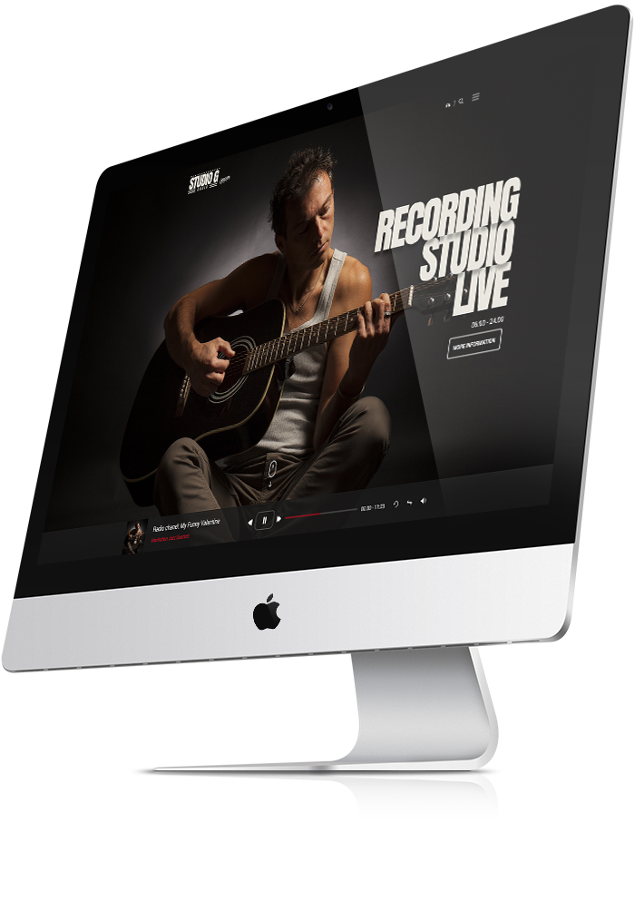
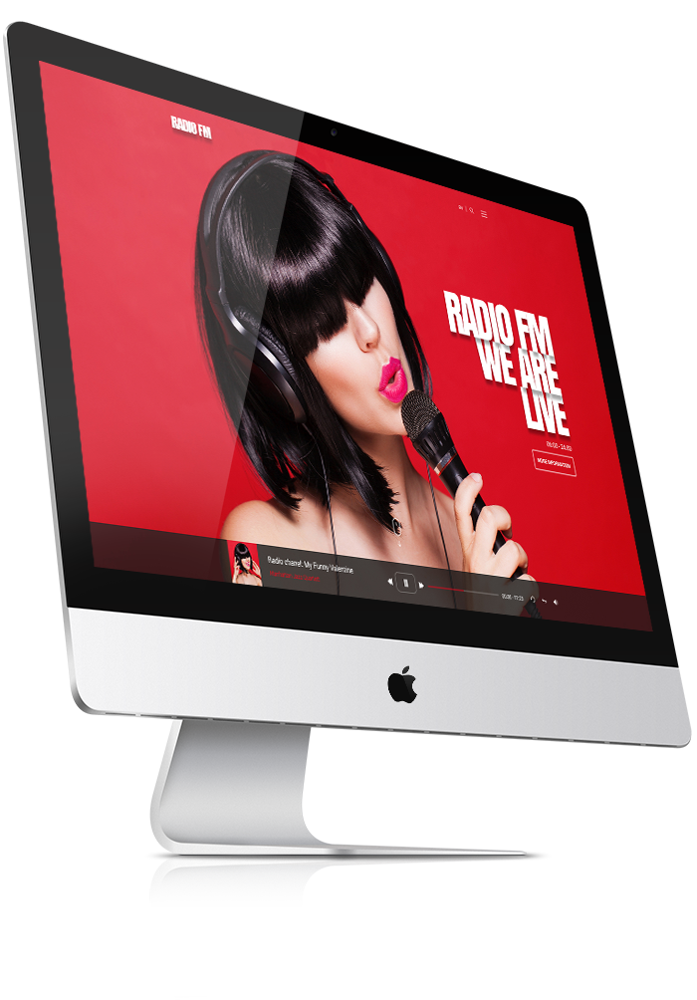

OVERVIEW
This RADIO FM template is created by one of our best designers. Template is realised with latest bootstrap and HTML5 frameworks. This template is for customers who are interested in creating online radio station or company for Sound Studio.
The template package includes 2 versions of this template:
1. Radio FM and 2. Sound Studio which has many useful pages with different styles, but most importantly it has online music player. We will try to add new pages and sections in the future and update the template furthermore. Once you buy the template, you are free to download the updates.
 Template Package includes:
- Working online music player;
- Working Photo gallery section;
- Blog;
- Blog post page;
- Google map location;
- Working contact form;
- Different Styles;
- 7 pages in .html format: (home, about us, artist, blog, blog post, channel and styles);
- 3 months free host account at www.m9host.com;
- free uploading service on any host account.
One of the most important features that websites need nowadays is device responsiveness. Computers are not the only machines able to access the internet anymore. People use smartphones, tablets, laptops, even smartwatches and iPods, more often than PCs, which is exactly what drove us to make this template device responsive – it changes design according to the device it is viewed from, hence it looks good on any of them.